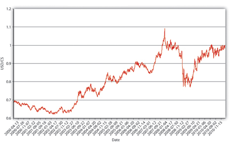
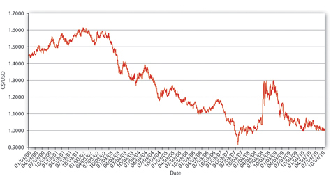
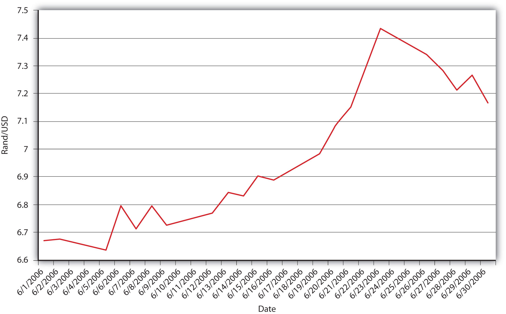
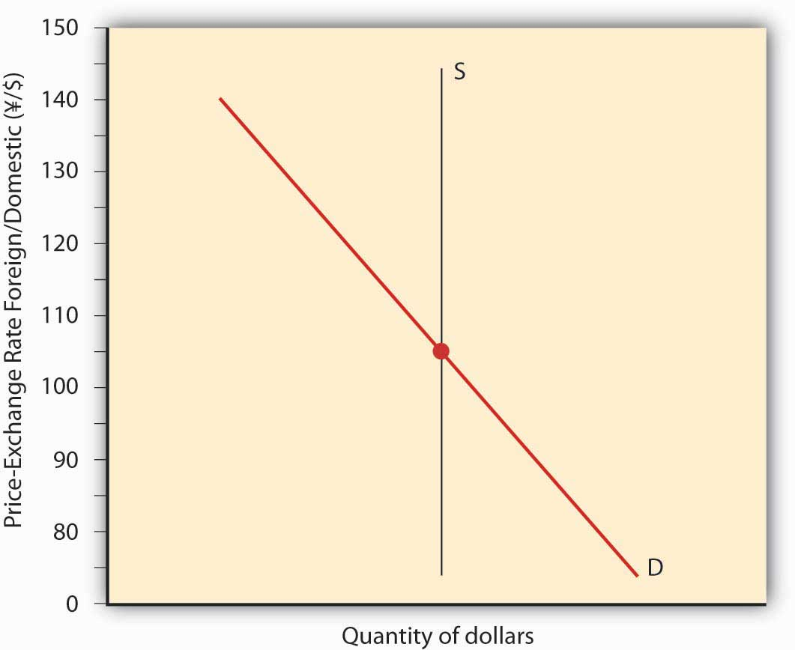
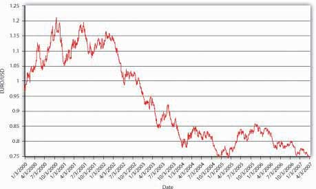
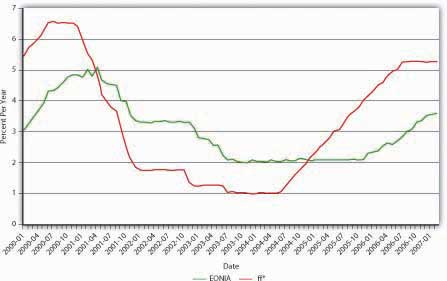
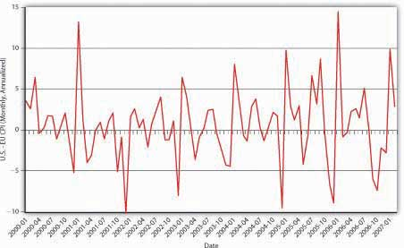

By the end of this chapter, students should be able to:
Before we turn to monetary theory (gulp!), there is one more real-world financial market we need to investigate in this and the next chapter, the market for foreign currencies or foreign exchange, where the relative prices of national units of account or exchange rates are determined. Why should you care how many U.S. dollars (USD) it takes to buy a euro or a yen, a pound (sterling) or a dollar (of Canada or Australia, respectively)? If you plan to travel to any of those places, you’ll want to know so you can evaluate prices. Is €1,000 a good price for a hotel room? How about ¥1,000?The symbol for the euro, the currency of the European Union, is €. The symbol for the Japanese yen is ¥. But even if you remain your entire life in a small village in Alaska, one of Hawaii’s outer islands, Michigan’s Upper Peninsula, or the northern reaches of Maine, the value of USD will affect your life deeply, whether you know it or not. Come again? How could that possibly be?
Every nation in the world trades with other nations. Some trade more than others (little islands like Iceland, Mauritius, and Ireland lead the way, in percentage of gross domestic product [GDP] terms anyway) but all do it, even illicitly, when the United Nations says that they can’t because they’ve been bad.www.entemp.ie/trade/export/sanctions.htm#overview Conducting trade via barter isn’t practical in most circumstances. So we use money. But what happens when people who want to trade use different types of money, when their units of account are not the same? There are several solutions to that problem. The most frequent solution today is for one party, usually the buyer, to exchange the money of his or her country for the money of the seller’s country, then to consummate the transaction.
How does this affect you? Well, when the unit of account of your country, say, U.S. dollars (USD or plain $), is strong, when it can buy many units of a foreign currency, say, Canadian dollars (C$), Canadian goods look cheap to you. And we all know what happens when goods are cheap. So you stop drinking Bud and start drinking Moosehead. Instead of going to Manhattan to shop, you go to Toronto, and check out some Maple Leafs, Raptors, and Blue Jays games while you’re at it. (You go in April, that magical month for sports fans.) When the Blue Jays game gets snowed out, you go instead to the Canadian ballet. (Do you have any sense of humor at all?) You might even consider buying a Canadian computer or automobile. (Okay, let’s not get crazy.) The point is you and your fellow Americans import more from Canada.
The Canadians are very happy about this, but they are not so thrilled with American goods, which look dreadfully expensive to them because they have to give up many of their dear loonies to buy USD. So they too eschew Manhattan for Toronto and drink Moosehead rather than Bud. In other words, U.S. exports to Canada fall. And because Canada is a major U.S. trading partner, that does not bode well for the U.S. economy overall, or U.S. residents, even those in remote villages. If USD were to continue to appreciate (strengthen, buy yet more C$), the situation would grow increasingly worse. Were the dollar to depreciate (weaken, buy fewer C$), the situation would ameliorate and eventually reverse, and you’d go back to Bud, Manhattan shopping sprees, and the Yankees, Mets, Knicks, Nets, Islanders, and Rangers.
A chain of pizza parlors in the southwestern part of the United States accepts Mexican pesos in payment for its pizzas. Many U.S. retail stores located near the Canadian border accept Canadian currency. (Many Canadian businesses accept U.S. dollars, too.) Why do these businesses accept payment in a foreign currency?
Well, maybe they are good folks who want to help out others and maybe some of them need foreign currencies to purchase supplies. But those are at best ulterior motives in most instances because the exchange rate offered usually heavily favors the retailer. For example, the pizza parlor’s exchange rate was 12 pesos to the dollar when the market exchange rate was closer to 11. So a $10 pizza costs 120 pesos (10 × 12) instead of 110 pesos (10 × 11). In short, it makes a tidy and largely riskless profit from the offer.
Or imagine you don’t have many assets or a high income, but you need an automobile. You see a commercial that says that there are three V-dubs (German-made Volkswagen automobile models) under $17,000. You think you can afford that and begin to make arrangements to buy a Rabbit. But look in Figure 18.1 "The dollar price of a €17,000 Rabbit and the euro price of a $10 computer fan" at what happens to the dollar price of a Rabbit when the exchange rate changes. Say that the Rabbit of your dreams costs €17,000. When the dollar and the euro are at parity (1 to 1), the Rabbit costs $17,000. If the dollar depreciates (buys fewer euro, and more USD are needed to buy €1), the Rabbit grows increasingly costly to you. If the dollar appreciates (buys more euro, and fewer USD are needed to buy €1), that cool automotive bunny gets very cheap indeed!
Figure 18.1 The dollar price of a €17,000 Rabbit and the euro price of a $10 computer fan

Now imagine that in your remote little town you make fans for French computers that you can sell profitably for $10.00. The dollar’s movements will affect you as a producer, but in precisely the opposite way as it affected you as a consumer. When the dollar appreciates against the euro, your computer fans grow more expensive in France (and indeed the entire euro zone), which will undoubtedly cut into sales and maybe your salary or your job. When the dollar depreciates, the euro price of your fans plummet, sales become increasingly brisk, and you think about buying a Cadillac (a more expensive American car).
We can’t teach you how to predict future exchange rates because the markets are highly efficient (free floating exchange rates follow a random walk) and because many exchange rates are more or less heavily influenced by monetary authorities. Some countries try to maintain fixed exchange rates by pegging their respective currencies to gold or some other currency, like the U.S. dollar, euro, or Swiss franc. Many others allow exchange rates to float within a range or band, some of which are broader than others. Other countries allow the value of their currencies to freely float, determined solely by supply and demand. Nations that fix their exchange rates or engage in a so-called dirty float (within bands) find it necessary to make periodic adjustments to both the width and range of the bands over time. So trying to make a living predicting exchange rate changes is difficult indeed. That said, you should be able to post-dict why floating exchange rates changed or, in other words, to narrate plausible reasons why past changes, like those depicted in Figure 18.2 "How many USD did it take to buy 1 Canadian dollar?" and Figure 18.3 "How many Canadian dollars did it take to buy 1 USD?", may have occurred. (This is similar to what we did with interest rates.)
Figure 18.2 How many USD did it take to buy 1 Canadian dollar?
Figure 18.3 How many Canadian dollars did it take to buy 1 USD?
The figures, like the exchange rates in Figure 18.1 "The dollar price of a €17,000 Rabbit and the euro price of a $10 computer fan", are mathematical reciprocals of each other. Both express the exchange rate but from different perspectives. Figure 18.2 "How many USD did it take to buy 1 Canadian dollar?" asks how many USD it took to buy $C1, or mathematically USD/C$. Figure 18.3 "How many Canadian dollars did it take to buy 1 USD?" asks how many $C it took to buy 1 USD, or C$/USD. In Figure 18.2 "How many USD did it take to buy 1 Canadian dollar?", USD weakens as the line moves up the chart because it takes more USD to buy $C1. The dollar strengthens as it moves down the chart because it takes fewer USD to buy $C1. Everything is reversed in Figure 18.3 "How many Canadian dollars did it take to buy 1 USD?", where upward movements indicate a strengthening of USD (a weakening of $C) because it takes more $C to buy 1 USD, and downward movements indicate a weakening of USD (a strengthening of $C) because it takes fewer $C to buy 1 USD. Again, the figures tell the same story: USD strengthened vis-à-vis the Canadian dollar from 2000 to early 2003, then weakened considerably, experiencing many ups and downs along the way due to relative differences in inflation, interest, and productivity rates in each country. USD appreciated during the financial crisis in an apparent “flight to quality” but weakened again during the 2010 recovery, bringing it back to parity with the Looney. We could do the same exercise ad nauseam (Latin for “until we vomit”) with every pair of currencies in the world. But we won’t because the mode of analysis would be precisely the same.
We’ll concentrate on the spot exchange rateThe price of one currency in terms of another today., the price of one currency in terms of another today, and currencies that are allowed to float freely or at least within wide bands. The forward exchange rateThe price of one currency in terms of another in the future., the price today of future exchanges of foreign currencies, is also important but follows the same general principles as the spot market. Both types of trading are conducted on a wholesale (large-scale) basis by a few score-big international banks in an over-the-counter (OTC) market. Investors and travelers can buy foreign currencies in a variety of ways, via everything from brokerage accounts to airport kiosks, to their credit cards. Retail purchasers give up more of their domestic currency to receive a given number of units of a foreign currency than the wholesale banks do. (To put the same idea another way, they receive fewer units of the foreign currency for each unit of their domestic currency.) That’s partly why the big banks are in the business. The big boys also try to earn profits via speculation, buying (selling) a currency when it is low (high), and selling (buying) it when it is high (low). (They also seek out arbitrage opportunities, but those are rare and fleeting.) Each day, over $1 trillion of wholesale-level ($1 million plus per transaction) foreign exchange transactions take place.
Before we go any further, a few words of caution. Students sometimes think that a strong currency is always better than a weak one. That undoubtedly stems from the fact that strong sounds good and weak sounds bad. As noted above, however, a strong (weak) currency is neither good nor bad but rather advantageous (disadvantageous) for imports/consumers and disadvantageous (advantageous) for exports/producers of exportable goods and services. Another thing: no need to thump your chest patriotically because it takes many units of foreign currencies to buy 1 USD. That would be like proclaiming that you are “hot” because your temperature is 98.6 degrees Fahrenheit instead of 37 degrees Centigrade (that’s the same temperature, measured two different ways) or that you are 175 centimeters tall instead of 68.9 inches (another equivalent). Most countries have a very small unit of account compared to the United States, that is all. Other countries, like Great Britain, have units of account that are larger than the USD, so it takes more than 1 USD to buy a unit of those currencies. The nominal level of the exchange rate in no way means that one country or economy is better than another. Changes in exchange rates, by contrast, have profound consequences, as we have seen. They also have profound causes.
If transaction costs are zero, identical goods should have the same price no matter what unit of account that price is expressed in. Or so says the law of one price. The reason is clear: if they did not, arbitrageurs would buy where the good was cheapest and sell where it was highest until the prices were equalized. Where transaction costs are nontrivial or goods are similar but not identical, we don’t expect a single price, but rather a band or range of prices. So if product X cost $100 in Country Y and $110 in Country Z, and it costs $10 to transport X from Y to Z, there would be no arbitrage opportunity and the price differential could persist. If the price of X rose in Z to $120, we’d expect it to increase in Y to at least $110, or arbitrageurs would start buying it in Y and selling it in Z until the prices were within $10 of each other. Similarly, Japanese-style beer is not the same as U.S.-style beer. But it is close enough that we would not expect the prices to vary widely or otherwise consumers would dump Bud, Miller, and Coors in favor of Kirin and Sapporo (or vice versa, as the case may be).
This sort of analysis has led economists to apply the law of one price to entire economies in what they call the theory of purchasing power parity (PPP), which predicts that, in the long run, exchange rates will reflect price level changes. In other words, higher rates of inflation in Country A compared to Country B will cause Country A’s currency to depreciate vis-à-vis Country B’s currency in the long run. In the short run, however, matters are quite different, as Figure 18.4 "Purchasing power parity, United Kingdom and United States, 1975–2005" shows. If PPP held in the short run, USD should have appreciated against the pound (the blue line should be above zero) every year in which inflation in the United Kingdom exceeded inflation in the United States (the red line is above zero), and vice versa. Clearly, that was not the case. But PPP has the long-run right, in sign but not quite in magnitude. Between 1975 and 2005, prices rose in Great Britain a shade under 205 percent all told. In that same period, they rose just under 142 percent in the United States. In other words, prices rose about 44 percent ([205 − 142]/142) more in Britain than in the United States. Over that same period, the pound sterling depreciated 22 percent against USD (from £.4505 to £.5495 per USD or from $2.22 to $1.82 per £1), just as PPP theory predicts it should have. But why did the pound weaken only 22 percent against the dollar?
Figure 18.4 Purchasing power parity, United Kingdom and United States, 1975–2005

For starters, not all goods and services are traded internationally. Land and haircuts come immediately to mind, but many other things as well when you think about it hard enough. There is no reason for prices of those goods to be the same or even similar in different countries. Arbitrageurs cannot buy low in one place and sell high in another because transaction costs are simply too high. (For example, you could get a great haircut in Malaysia for fifty cents but it would cost several thousand dollars and several days to get there and back.)
Figure 18.5 Determinants of exchange rates in the long run

In addition, three other factors affect exchange rates in the long run: relative trade barriers, differential preferences for domestic and foreign goods, and differences in productivity. Tariffs (taxes on imported goods), quotas (caps on the quantity of imported goods), and sundry nontariff barriers (NTBs) to tradewww.wto.org/english/thewto_e/whatis_e/tif_e/agrm9_e.htm increase demand for domestic over foreign goods, thereby allowing the domestic currency to appreciate without injuring sales of domestic goods. Preferences for domestic goods have the same effect; preferences for foreign goods (French wine, German beer, Japanese automobiles) have the opposite effect, depreciating the domestic currency by maintaining demand for foreign goods even in the face of higher prices. Finally, as a country becomes relatively more productive than other countries, the price of its wares tends to fall. Its currency, therefore, appreciates because it can do so without injuring exports. If a country’s productivity lags that of other countries, by contrast, its currency will depreciate. Of course, this is all ceteris paribus. Figure 18.5 "Determinants of exchange rates in the long run" summarizes the discussion.
As Figure 18.6 "South Africa-United States exchange rate, June 2006" shows, exchange rates can be very volatile. In a single month (June 2006), the South African rand depreciated from about 6.6 to 7.4 rand to 1 USD, with various ups and downs along the way. The rand then reversed course and appreciated toward 7.1 rand/USD. Such fluctuations are by no means unusual. Why do exchange rates undergo such gyrations? Figure 18.7 "Determinants of exchange rates in the short run" summarizes the major factors affecting exchange rates in the short run. Note that it looks very much like Figure 18.5 "Determinants of exchange rates in the long run" but with three key differences. First, instead of actual relative price levels, trade barriers, exports, imports, and productivity driving changes, expectations of their future direction drive changes. This should not be surprising given the basic rationality of most financial markets. Second, two additional variables have entered the equation: foreign and domestic interest rates. The intuition behind the first variables is the same as those discussed above, but in the short run, the mere expectation of a change in a variable moves the market. The intuition behind the interest rates is also straightforward. If something increases demand for the domestic currency, like domestic interest rates increasing or foreign interest rates decreasing, it will appreciate. If something reduces demand for the domestic currency, like domestic interest rates decreasing or foreign interest rates increasing, it will depreciate. Because expectations and interest rates change frequently, so, too, do exchange rates under the current floating rate regime.
Figure 18.6 South Africa-United States exchange rate, June 2006
Figure 18.7 Determinants of exchange rates in the short run

There is an important distinction between real and nominal interest rates. Through the Fisher Equation, we know that the nominal interest rate equals the real interest rate plus inflation expectations. Is that distinction important when considering foreign exchange markets?
Absolutely, and here is why. An increase in nominal interest rates caused by a rise in the real interest rate would leave expectations about future exchange rates unchanged and hence would cause the domestic currency to appreciate. An increase in nominal interest rates caused solely by an increase in inflation expectations, by contrast, would cause the expected future exchange rate to decrease through the expected and actual price level effects. So the domestic currency would depreciate instead.
The third difference between the long and short terms is that, in the short term, the expectation of the future direction of the exchange rate plays an important role. The easiest way to see this is to compare two investments with a one-year time horizon: a domestic (say, USD-denominated) bank account that pays 5 percent per year and a foreign (say, pound-sterling-denominated) account paying 6 percent per year. Before you jump for the sterling (6 > 5), you need to consider that, in a year, you’re going to want dollars again because you reside in the United States and need USD to buy lunch, pay the rent, and so forth. If the dollar appreciates more than 1 percent over the course of the year, you’d be better off with the dollar deposit. Say that you invest $10,000 in sterling when the exchange rate is $1.50/£1 or, in other words, £.6667/$1. Your investment today would buy 10,000 × .6667 = £6,667. Multiply that by the interest on the sterling deposit (1.06) and you get £7,067.02 in a year. If the exchange rate is unchanged, you’re cool because you’ll have 7,067.02 × 1.50 = $10,600.53, which is greater than $10,000 invested at 5 percent, which equals 10,000 × 1.05 = $10,500.00. But what if, over the course of that year, the dollar appreciated strongly, to $1.25 per pound? Then your £7,067.02 would buy you only 7,067.02 × 1.25 = $8,833.78. You just took a bath, and not the good kind, because you should have invested in the dollar deposit! Of course, if the dollar depreciated to, say, $1.75, you’ll be pheeling phat at 7,067.02 × 1.75 = $12,367.29.
Increases in the growth rate of the money supply will eventually cause the price level to increase, but its effect on nominal interest rates in the short term can vary: rates can dip strongly, then rebound but remain permanently lower than the previous level, decrease temporarily before increasing permanently, or increase immediately. What does this mean for the market for foreign exchange?
The fact that a major short-run determinant of the exchange rate, foreign and domestic interest rates, moves around a lot helps to explain why the foreign exchange market is volatile. That market is also volatile because expectations of many things, including future differential price levels, productivity, and trading levels, will affect it via the expected future exchange rate (the Eef variable in the equation introduced below).
As noted above, the markets for foreign exchange and bonds/deposits are highly competitive and efficient, so we wouldn’t expect discrepancies in returns to last long. The law of one price, of course, applies most stringently to financial markets in which international capital mobility is allowed because huge sums of money (deposits) can be sent hither and thither almost immediately and cost-free, ideal conditions for the law of one price to prevail. So what economists call the interest parity condition often holds (is true). More formally,
where:
iD = domestic interest rate
iF = foreign interest rate
Eef = expected future exchange rate
Et = exchange rate today
(Note: express all variables as decimals, e.g. 6% = .06; 5 = 500%.)
In plain English, if the so-called interest parity condition holds, the domestic interest rate should equal the foreign interest rate minus the expected appreciation of the domestic currency. If iF is > iD, the domestic currency must be expected to appreciate; otherwise, everyone would sell their domestic deposits to buy the foreign ones. If iF is < iD, the domestic currency must be expected to depreciate (have a negative sign, two of which make a positive, augmenting iF); otherwise, everyone would sell the foreign deposits and buy the domestic ones. If you find this confusing, there is another, more intuitive way of stating it: the domestic interest rate must equal the foreign interest rate plus the expected appreciation of the foreign currency. If iF is < iD, the expected appreciation of the foreign currency compensates for the lower interest rate, allowing equilibrium. You can practice calculating interest parity in the following Exercise.
Use the interest parity formula (iD = iF − (Eef − Et)/Et) to calculate the following:
| Foreign Interest Rate | Expected Future Exchange Rate | Exchange Rate Today | Answer: Domestic Interest Rate |
|---|---|---|---|
| 0.05 | 1 | 1 | 0.05 |
| 0.05 | 1.01 | 1 | 0.04 |
| 0.05 | 1.02 | 1 | 0.03 |
| 0.05 | 1.03 | 1 | 0.02 |
| 0.05 | 0.9 | 1 | 0.15 |
| 0.05 | 0.8 | 1 | 0.25 |
| 0.05 | 0.7 | 1 | 0.35 |
| 0.06 | 1 | 1 | 0.06 |
| 0.06 | 1 | 1.1 | 0.15 |
| 0.06 | 1 | 1.2 | 0.23 |
| 0.06 | 1 | 1.3 | 0.29 |
| 0.06 | 1 | 0.99 | 0.05 |
| 0.06 | 1 | 0.95 | 0.01 |
| 0.1 | 1 | 0.95 | 0.05 |
| 0.15 | 1 | 1 | 0.15 |
| 0.15 | 1.1 | 1 | 0.05 |
| 0.15 | 1 | 10 | 1.05 |
| Expected Future Exchange Rate | Exchange Rate Today | Domestic Interest Rate | Answer: Foreign Interest Rate |
|---|---|---|---|
| 1 | 1 | 0.02 | 0.02 |
| 1.1 | 1 | 0.02 | 0.12 |
| 1.2 | 1 | 0.02 | 0.22 |
| 1.3 | 1 | 0.02 | 0.32 |
| 0.9 | 1 | 0.11 | 0.01 |
| 0.8 | 1 | 0.21 | 0.01 |
| 0.7 | 1 | 0.31 | 0.01 |
| 1 | 1 | 0.1 | 0.10 |
| 1 | 1.1 | 0.1 | 0.01 |
| 1 | 1.2 | 0.2 | 0.03 |
| 1 | 1.3 | 0.25 | 0.02 |
| 1 | 0.9 | 0.1 | 0.21 |
| 1 | 0.8 | 0.1 | 0.35 |
| 1 | 0.7 | 0.1 | 0.53 |
| 1 | 1 | 0 | 0.00 |
| 10 | 1 | 0 | 9.00 |
| 1 | 5 | 1 | 0.20 |
Like other markets, the market for foreign exchange can be graphically modeled to help us visualize the action, as in Figure 18.8 "Equilibrium in the market for USD". There are a number of ways to do this, but perhaps the easiest is to plot the quantity of dollars on the horizontal and the exchange rate, stated in terms of foreign divided by domestic (say, yen or ¥/USD) on the vertical. The supply of dollar assets will be perfectly vertical, unchanged at every exchange rate. The demand for dollars, by contrast, will have the usual downward slope because, at higher exchange rates, fewer dollar assets will be demanded than at lower exchange rates. So at ¥120 to 1 USD, relatively few dollar-denominated assets will be demanded compared to only ¥100 or ¥80 per dollar. The intersection of the supply and demand curves will determine E*, which in this case is ¥100/$, and q*, which in this case is $100 billion.
Figure 18.8 Equilibrium in the market for USD
We can immediately see that, holding all else constant, anything that increases demand for dollar-denominated assets (shifts the demand curve to the right), including an increase in the domestic interest rate, a decrease in the foreign interest rate, or an increase in Eef (for any reason, including the variables in Figure 18.5 "Determinants of exchange rates in the long run"), will cause the dollar to appreciate (E* to increase when stated in terms of foreign/domestic or in this case ¥/$). Anything that causes demand for dollar-denominated assets, including a decrease in the domestic interest rate, an increase in the foreign interest rate, or a decrease in Eef, to decrease (shift the demand curve to the left) will cause the dollar to depreciate (E* to decrease when stated in terms of foreign/domestic).
Post-dict Figure 18.9 "Euro-dollar exchange rate, 2000–2007" using Figure 18.10 "Interest rates in Europe and the United States, 2000–2007" and Figure 18.11 "Differential inflation in the United States and the Euro zone, 2000–2007".
Figure 18.9 Euro-dollar exchange rate, 2000–2007
Figure 18.10 Interest rates in Europe and the United States, 2000–2007
Figure 18.11 Differential inflation in the United States and the Euro zone, 2000–2007
From the beginning of 2000 until early 2002, the dollar appreciated against the euro, moving from rough parity (1 to 1) to €1.10 to €1.20 per USD. This isn’t surprising given that U.S. interest rates (proxied here by the fed funds rate ff*) were higher than euro zone interest rates (proxied here by EONIA, the ECB’s fed funds equivalent). Moreover, except for the spike in early 2001, the price level in the United States did not rise appreciably faster than prices in the euro zone did. Since mid-2002, prices in the United States have risen faster than prices in the euro zone. (There are more periods when the consumer price index [CPI] in the United States was > the CPI in the euro zone, for example, when the red line is above zero.) Since mid-2004, interest rates have risen more quickly in the United States than in the euro zone, but not enough to offset the higher U.S. inflation rate. Fears of a recession in the United States and slowing U.S. productivity also dragged on the dollar.
Galant, Mark, and Brian Dolan. Currency Trading for Dummies. Hoboken, NJ: John Wiley and Sons, 2007.
Shamah, Shani. A Foreign Exchange Primer. Hoboken, NJ: John Wiley and Sons, 2009.